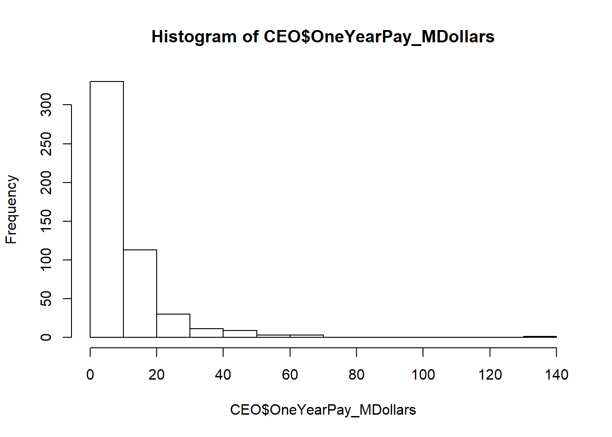

Chapter 17
0.1 Sampling distribution models
It is possible to simulate possible samples from a population. This will help us to determine the likelihood that the value of \(\hat{p}\) is the same as P.
The “sampling distribution” can be presented as a histogram of all the different samples that can be taken from a population.
The “normal model” can be used to model the sampling distribution, which helps us to identify where the population parameter is based on statistics from our samples.
The model can be described as follows:
N(p, \(\sqrt{pq/n}\))
If a survey of 2000 people reports that 57% of people think climate change is predominately man-made, then the standard distribution is as follows:
SD(\(\hat{p}\)) = \(\sqrt{pq/n}\) =\(\sqrt{0.57 * 0.43/2000}\)
= 0.011 = standard deviation of 1.1 percentage points (not 1.1%)
So the model is N(0.57, 0.011)
0.1.1 When does the normal model work?
- We need to have at least 10 potential successes and 10 potential failures in the data
- Sample should be maximum 10% of the total population
- Randomised Condition - the cases are selected randomly
- Independence Assumption - individuals must be independent of each other
The variation between the different samples that can be made is called “sampling error” but a better term would be “sampling variation” since “error” is pejorative.
Sampling models tell us how much variation we should expect and therefore how certain we can be about a statistic from a sample.
0.1.2 Sampling distributions of other staistics
We can also produce histograms of other statistics e.g.
- medians
- variances
- minimums
- means
They will not always result in a normal model.
0.1.3 Central Limit Theorum (CLT)
The sampling distribution of any mean becomes more nearly normal as the sample size grows.
… And this is true of any population, even from a skewed or bimodal population.
CEO compensation example:
Data summary of CEO salaries from 2012.
summary(CEO)## Rank Name Company
## Min. : 1.0 A Greig Woodring: 1 3M : 1
## 1st Qu.:125.8 Ajay S Banga : 1 Abbott Laboratories : 1
## Median :250.5 Alain Monie : 1 Adobe Systems : 1
## Mean :250.5 Alan B Miller : 1 Advance Auto Parts : 1
## 3rd Qu.:375.2 Alan D Wilson : 1 Advanced Micro Devices: 1
## Max. :498.0 Alan R Mulally : 1 AES : 1
## (Other) :494 (Other) :494
## OneYearPay_MDollars FiveYearPay_MDollars Shares_MDollars
## Min. : 0.000 Min. : 0.003 Min. : 0.00
## 1st Qu.: 3.885 1st Qu.: 20.901 1st Qu.: 6.38
## Median : 6.968 Median : 33.733 Median : 16.55
## Mean : 10.476 Mean : 50.755 Mean : 411.18
## 3rd Qu.: 13.361 3rd Qu.: 62.590 3rd Qu.: 36.85
## Max. :131.190 Max. :903.210 Max. :44486.80
## NA's :129
## Age Efficiency LogPay
## Min. :32.00 Min. : 1.00 Min. :5.204
## 1st Qu.:53.00 1st Qu.: 52.25 1st Qu.:6.592
## Median :57.00 Median :103.00 Median :6.843
## Mean :56.98 Mean :103.31 Mean :6.844
## 3rd Qu.:61.00 3rd Qu.:154.50 3rd Qu.:7.126
## Max. :84.00 Max. :206.00 Max. :8.118
## NA's :294 NA's :3The summary shows that the Mean pay (for one year) is 10.4 million USD.
hist(CEO$OneYearPay_MDollars)
Then we can run samples of size 10, and we end up with a less-skewed graph of all the means from the samples:
CEOsalary <- CEO$OneYearPay_MDollars
# sample size is 10, we are going to take 1000 samples
CEO_salary <- CEO$OneYearPay_MDollars
SampleSize <- 10
SampleNumber <- 1000
sample_means <- rep(NA, SampleNumber)
for(i in 1:SampleNumber){
samp <- sample(CEO_salary, SampleSize)
sample_means[i] <- mean(samp)
}
hist(sample_means)The means are grouping around the population mean of 10 million USD.
Let’s run the experiment again, but this time with samples of 50:
CEOsalary <- CEO$OneYearPay_MDollars
# sample size is 10, we are going to take 1000 samples
CEO_salary <- CEO$OneYearPay_MDollars
SampleSize <- 50
SampleNumber <- 1000
sample_means50 <- rep(NA, SampleNumber)
for(i in 1:SampleNumber){
samp <- sample(CEO_salary, SampleSize)
sample_means50[i] <- mean(samp)
}
hist(sample_means50)And once more, but this time with samples of 200:
CEOsalary <- CEO$OneYearPay_MDollars
# sample size is 10, we are going to take 1000 samples
CEO_salary <- CEO$OneYearPay_MDollars
SampleSize <- 200
SampleNumber <- 1000
sample_means200 <- rep(NA, SampleNumber)
for(i in 1:SampleNumber){
samp <- sample(CEO_salary, SampleSize)
sample_means200[i] <- mean(samp)
}
hist(sample_means200, breaks =20)Now the shape of the distribution is much more “normal”, with the means centering around the population mean of 10.4
The CLT requires the following conditions to work: - Independence Assumption - Sample Size Condtion: As seen in the above example, the sample size had to be increased to around 200 before the normal model was reached. However, the population size is only 494, so in this instance we have to take a lot of samples because the data was so skewed in the first place.
Because Means have smaller standard deviations than individuals (you might be surprised if someone in your class was 6’9" tall, but you would be really surprised if the mean of your class was 6’9" since this is extremely unlikely).
So the larger the sample, the more the standard deviation is reduced, but only by the SQUARE ROOT of the number of cases.
SD(\(\overline{y}\)) = \(\sigma\)/\(\sqrt{n}\)
So we use SD(\(\overline{y}\)) for QUANTITATIVE data and SD(\(\hat{p}\)) for CATEGORICAL data (an “either/or” investigation e.g. % of people that belive in God).
0.1.4 Exercise - coin tossing
Demonstrating the effect of different sample sizes for coin tossing experiment.
In question 19, Chapter 17, each student in a class tosses a coin 25 times.
# Let heads = 1 and Tails = 0
# Create a function to flip the coins.
# The mean of the dataframe will be the % heads.
n = 25
Flip1Coin = function(n) sample(c(1, 0), n, rep = T)
CoinResult <- Flip1Coin(n)
mean(CoinResult)## [1] 0.52Now we can get the means from repeating the experiment for the number of students in the class. Let’s say there are 30 students.
# experiment is run by n number of students
# they flip the coin n times
StudentNumber <- 30
FlipNumber <- 25
Flip1Coin = function(FlipNumber) sample(c(1, 0), FlipNumber, rep = T)
ExperimentResults <- rep(NA, StudentNumber)
for(i in 1:StudentNumber){
CoinResult <- Flip1Coin(FlipNumber)
# mean(CoinResult)
ExperimentResults[i] <- mean(CoinResult)
}
hist(ExperimentResults)mean(ExperimentResults)## [1] 0.4933333sd(ExperimentResults)## [1] 0.1152309The histogram above centers around 0.4 to 0.6. If we increase the number of coin tosses to 64 then it looks like this, following the CLT:
# experiment is run by n number of students
# they flip the coin n times
StudentNumber <- 30
FlipNumber <- 64
Flip1Coin = function(FlipNumber) sample(c(1, 0), FlipNumber, rep = T)
ExperimentResults <- rep(NA, StudentNumber)
for(i in 1:StudentNumber){
CoinResult <- Flip1Coin(FlipNumber)
# mean(CoinResult)
ExperimentResults[i] <- mean(CoinResult)
}
hist(ExperimentResults)mean(ExperimentResults)## [1] 0.5046875sd(ExperimentResults)## [1] 0.08299985We can also experiment with the 25 flips, but carried out by more students (let’s say 100):
# experiment is run by n number of students
# they flip the coin n times
StudentNumber <- 100
FlipNumber <- 25
Flip1Coin = function(FlipNumber) sample(c(1, 0), FlipNumber, rep = T)
ExperimentResults <- rep(NA, StudentNumber)
for(i in 1:StudentNumber){
CoinResult <- Flip1Coin(FlipNumber)
# mean(CoinResult)
ExperimentResults[i] <- mean(CoinResult)
}
hist(ExperimentResults)
mean(ExperimentResults)## [1] 0.5112sd(ExperimentResults)## [1] 0.08726229